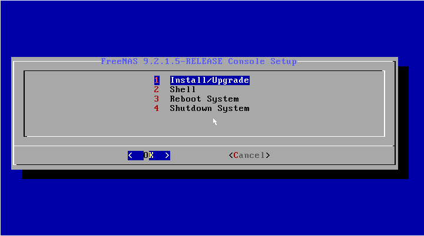
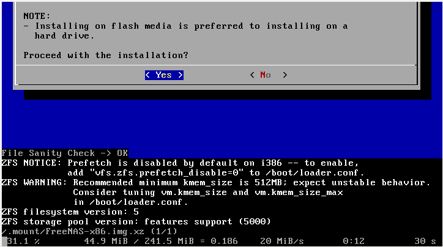
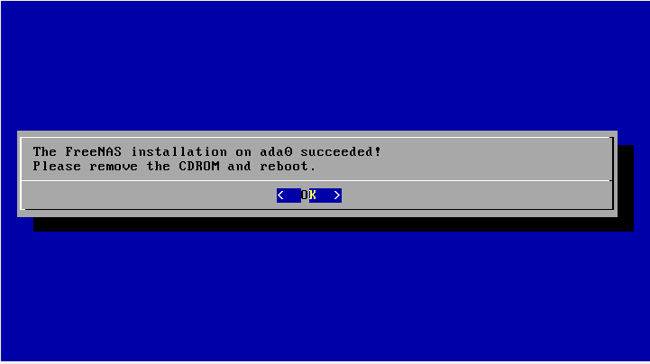
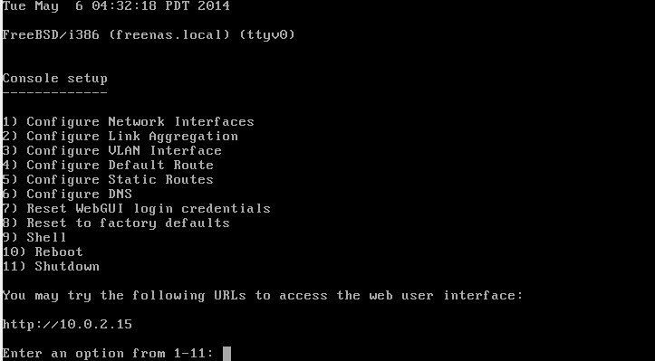
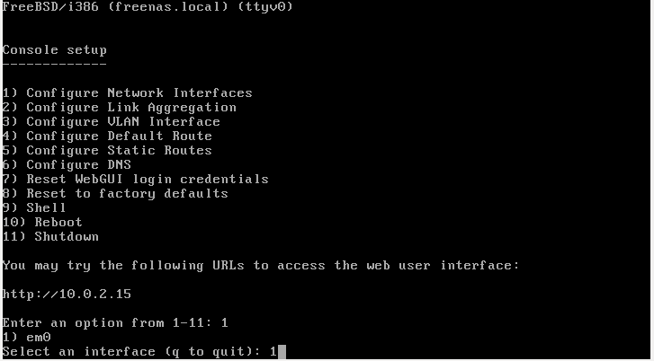
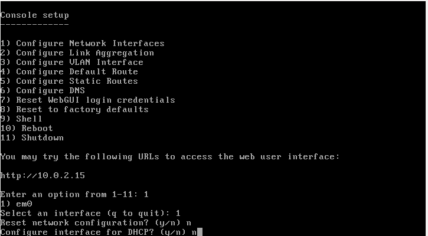
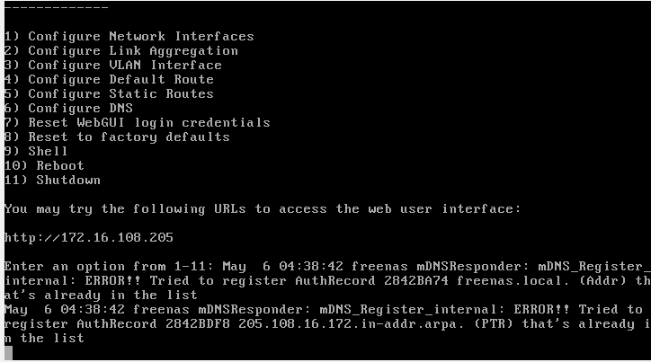
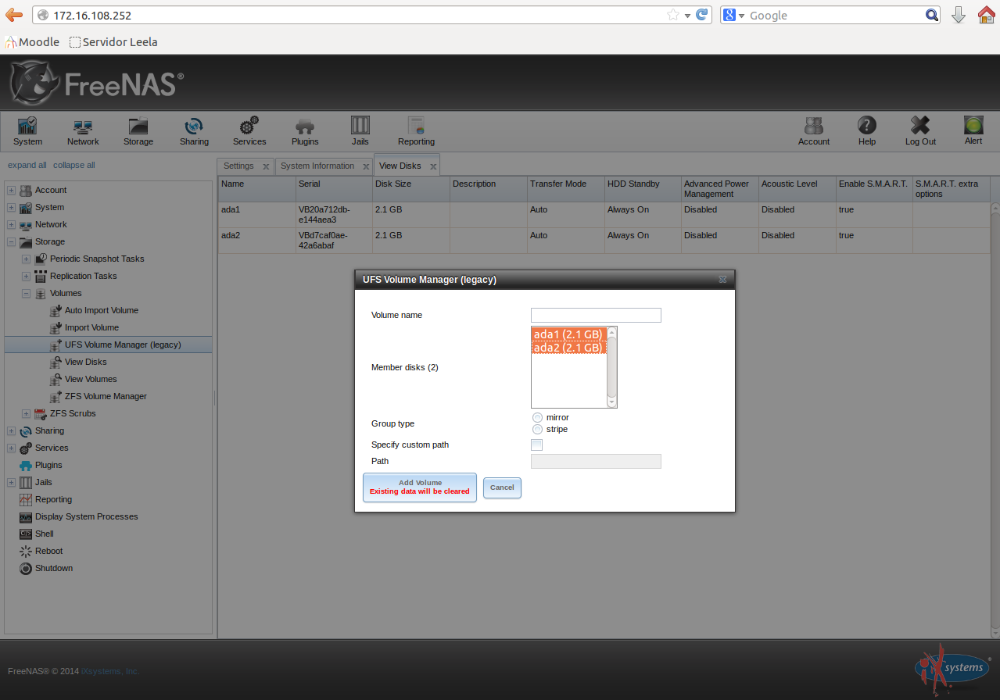
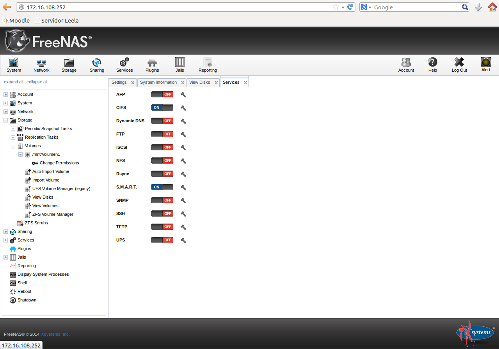
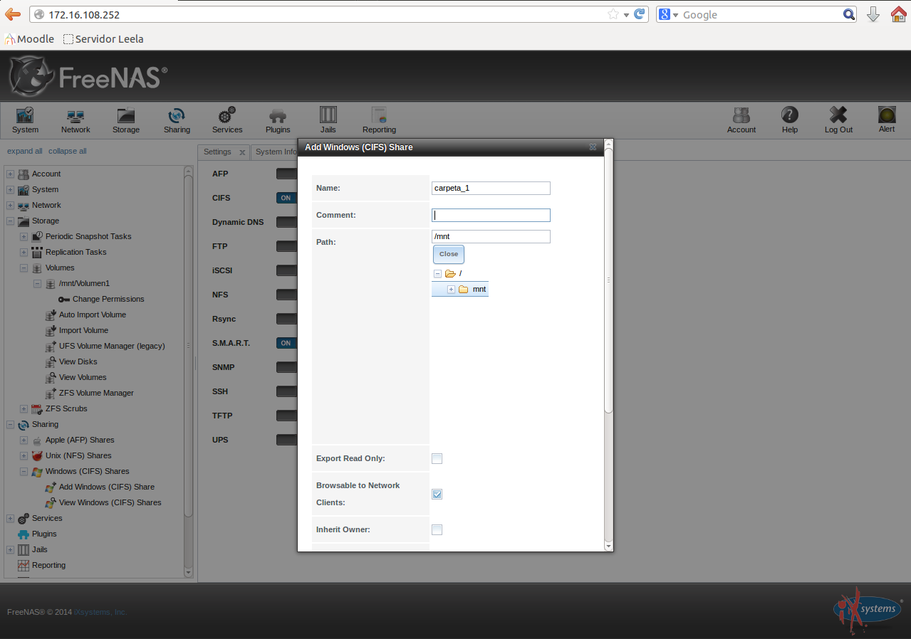

- Módulo: Sistemas Operativos
- Título del trabajo Plantilla HTML entrega de trabajo
- Componentes del grupo: David Vargas
- Curso Académico: 2013/2014
- Fecha de entrega: 1 de Enero de 2014
Elejimos el numero 1, elejimos el disco duro ada0
Le damos a aceptar
Retiramos el disco de FreeNas
Esperamos a que se inicie, y luego configuramos la red. Pulsamos 1
Elejimos la interfaz em0. Para ello pulsamos 1
No reiniciamos la configuración de red, y no lo configuramos por DHCP
No le damos nombre a la interfaz y ponemos la IP. Una vez hecho esto pulsamos el 6 y configuramos a FRY como servidor dns
Con un navegador web nos metemos en la IP que le hemos puesto a FreeNAS.
Ponemos una nueva contraseña
Nos vamos a Storage-> Volumes -> UFS Volumes Manager
Activamos el uso de carpetas compartidas CIFS, yu luego creamos el recurso compartido
 